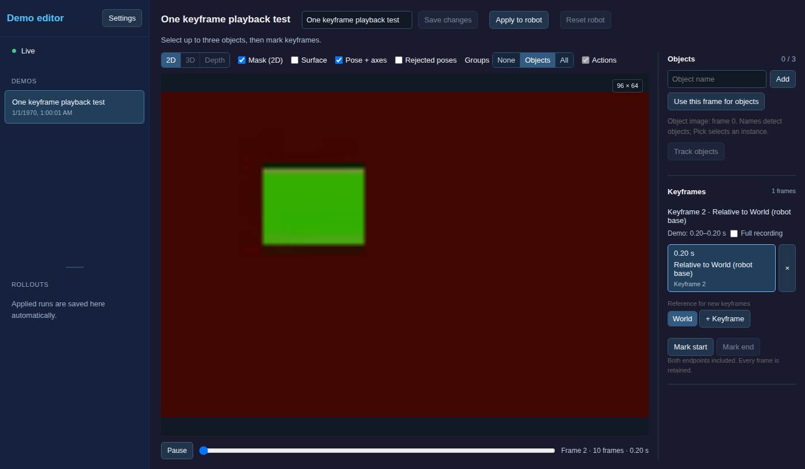
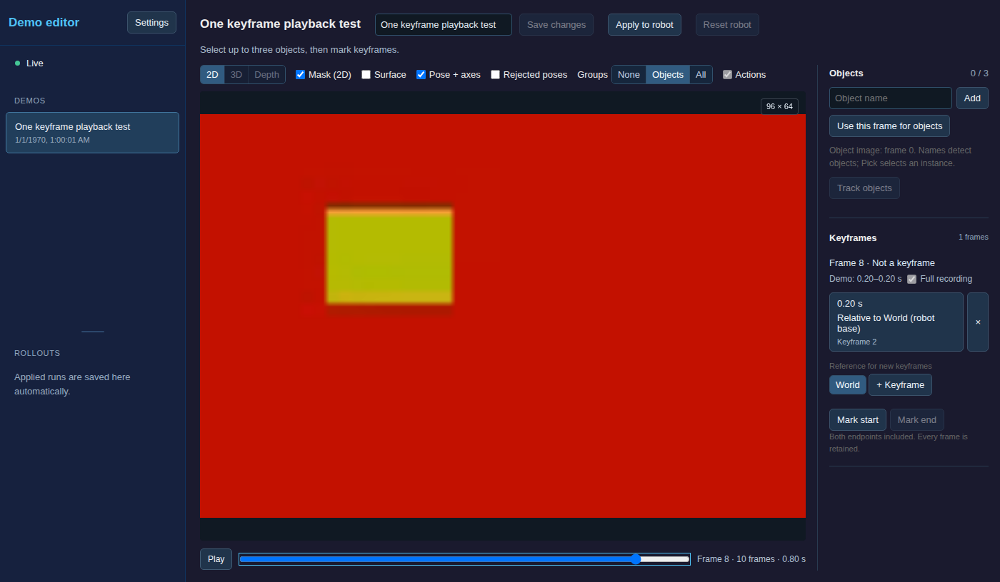

Actual editor captures using the same 10-frame synthetic test recording.Both states contain one saved keyframe: frame 2.

Playback wrapped three times. The only displayed frame was 2.

Play advanced through at least four frames. Then the test sought to frame 8.
Crops and boxes annotate real screenshots. This is a playback regression test, with no tracking result or physical robot. The fixed test also checks deletion from two keyframes down to one.